Fullscreen mode
Just press »F« on your keyboard to show your presentation in fullscreen mode. Press the »ESC« key to exit fullscreen mode.
Overview mode
Press "Esc" or "o" keys to toggle the overview mode on and off. While you're in this mode, you can still navigate between slides, as if you were at 1,000 feet above your presentation.
Unix
Lesson 2
Author: Egoshkin Danila Igorevich
Plan
- Virtual Machines vs Emulators, Concept Difference
- Emu - Emulators
- VM - Virtual Machine
Open-source software &
Open-source hardware
Open-source software (OSS) is a type of computer software in which source code is released under a license in which the copyright holder grants users the rights to use, study, change, and distribute the software to anyone and for any purpose.[1] Open-source software may be developed in a collaborative public manner. Open-source software is a prominent example of open collaboration.[2]
Open-source hardware (OSH) consists of physical artifacts of technology designed and offered by the open-design movement.
Open-source software
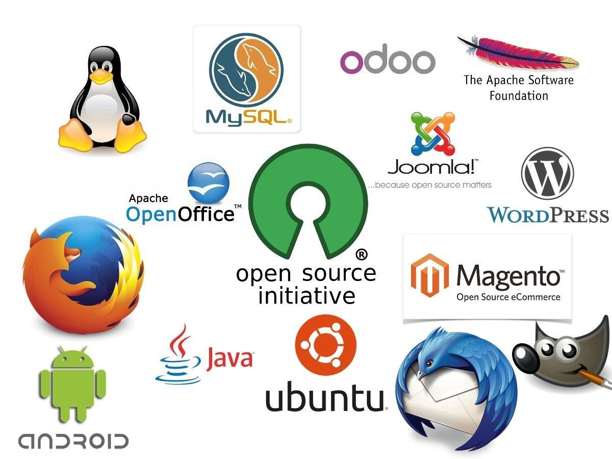Open-source hardware

pSX emulator — бесплатный эмулятор игровой приставки Sony PlayStation. Эмулятор вышел 4 февраля 2006 года.
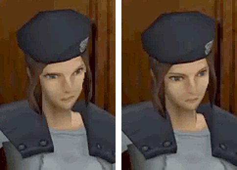
Sony PlayStation | pSX emulator
DOSBox is a free and open-source emulator which runs software for MS-DOS compatible disk operating systems—primarily video games. It was first released in 2002.
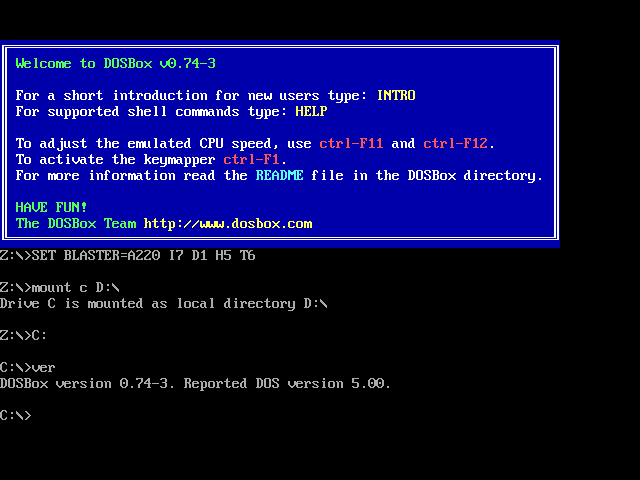
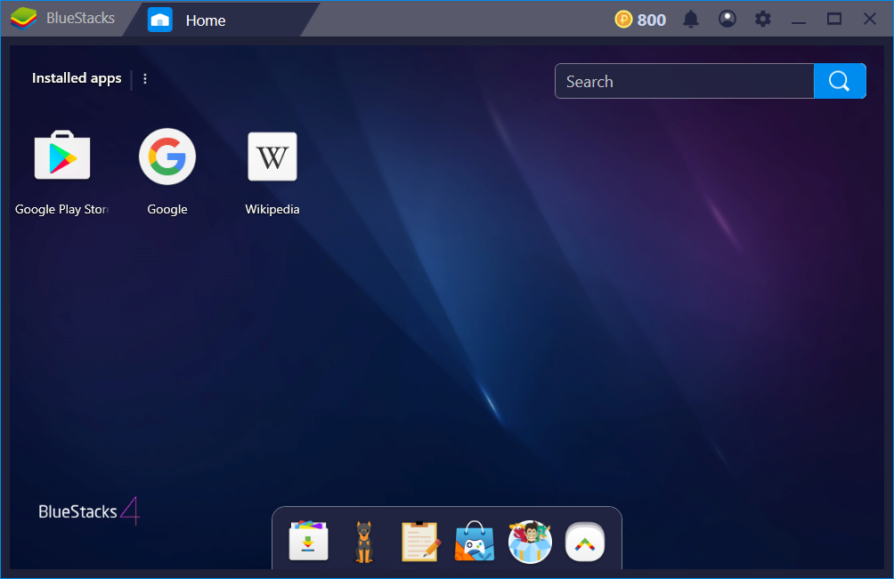
Cygwin - is a POSIX-compatible programming and runtime environment that runs natively on Microsoft Windows. Under Cygwin, source code designed for Unix-like operating systems may be compiled with minimal modification and executed.
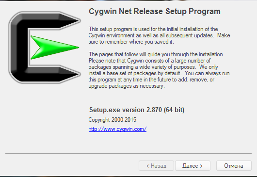
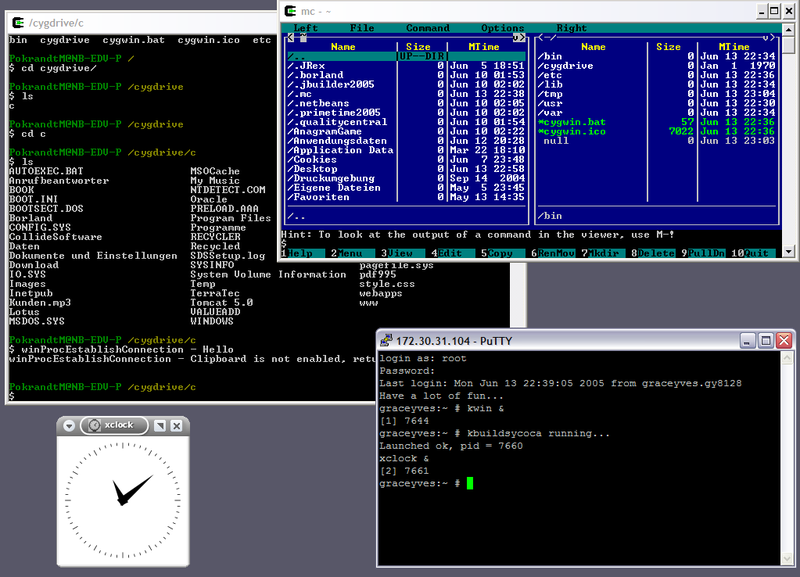
Wine (recursive backronym for Wine Is Not an Emulator) is a free and open-source compatibility layer that aims to allow application software and computer games developed for Microsoft Windows to run on Unix-like operating systems.
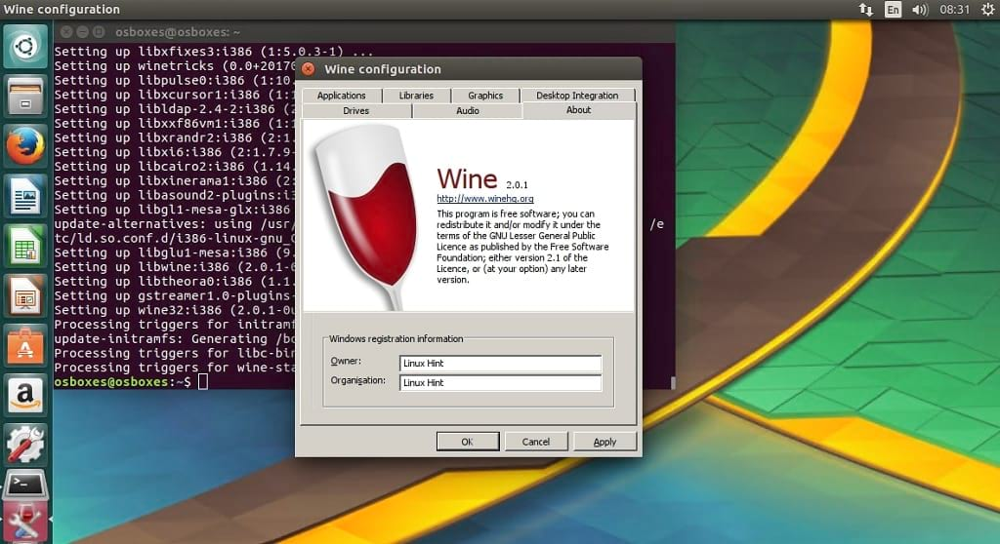
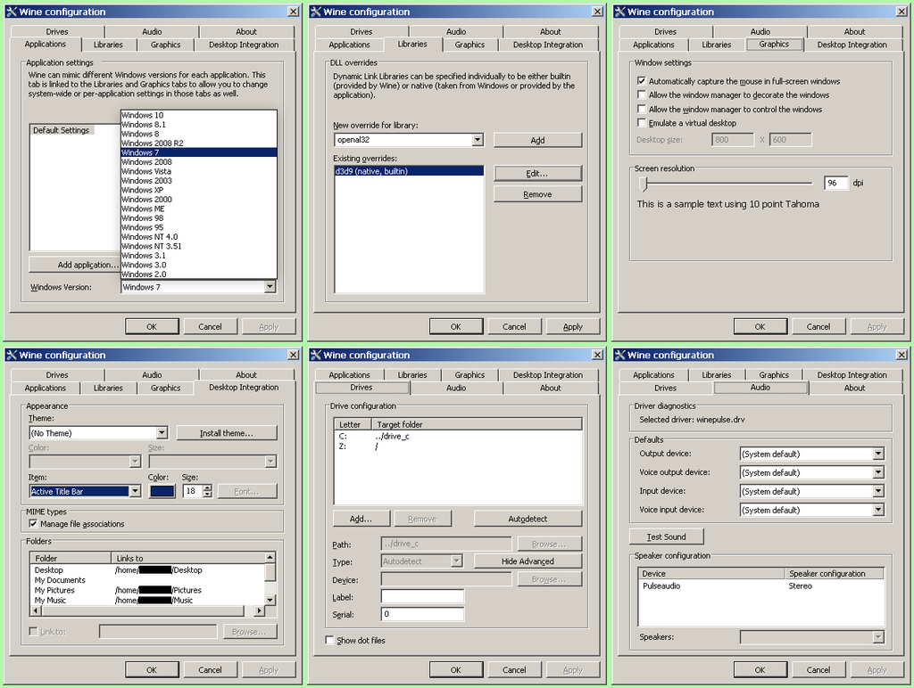
VM - Virtual Machine - Install
+- High Speed - Big blocks
- Unix/Linux
Virtual Box
Virtual Box
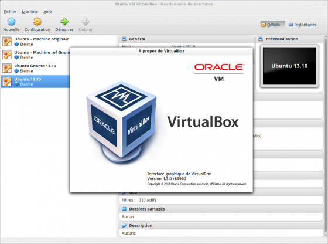VMWare
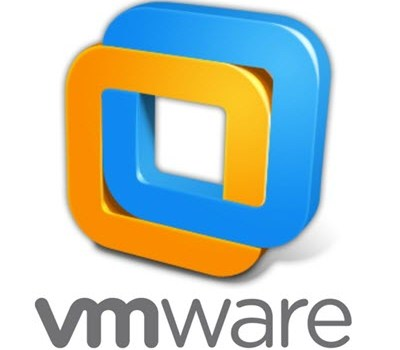VMWare
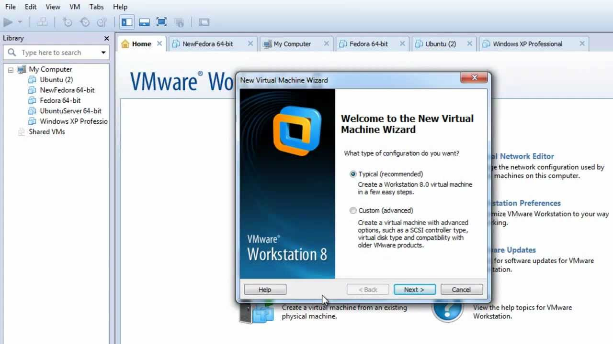Android Studio
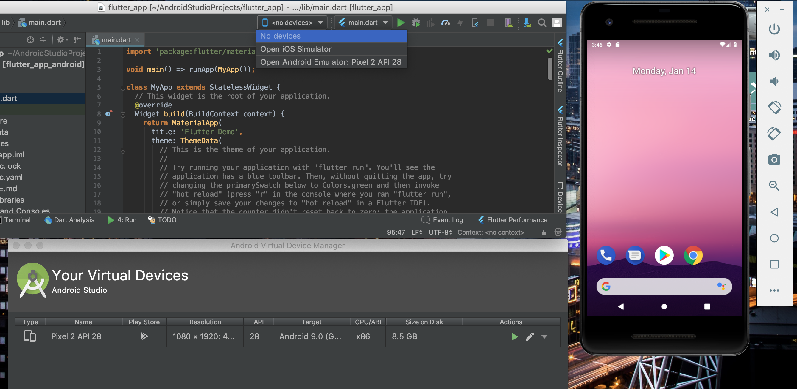QEMU
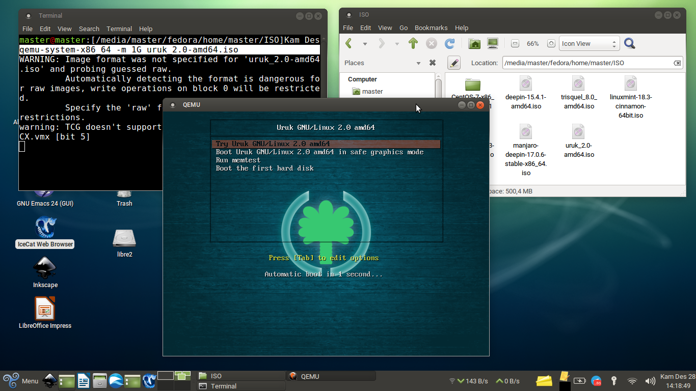Parallels Desktop for Mac
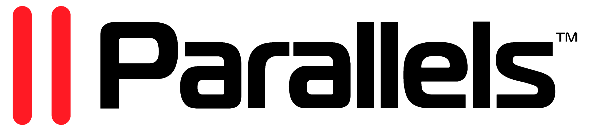Parallels Desktop for Mac - swipe

Parallels Desktop for Mac - multi OS - MacOS, Win7, Win10
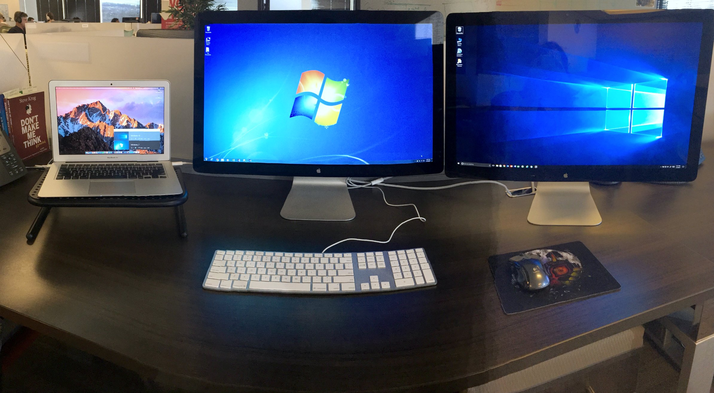Hyper-V and WSL/WSL2
for future